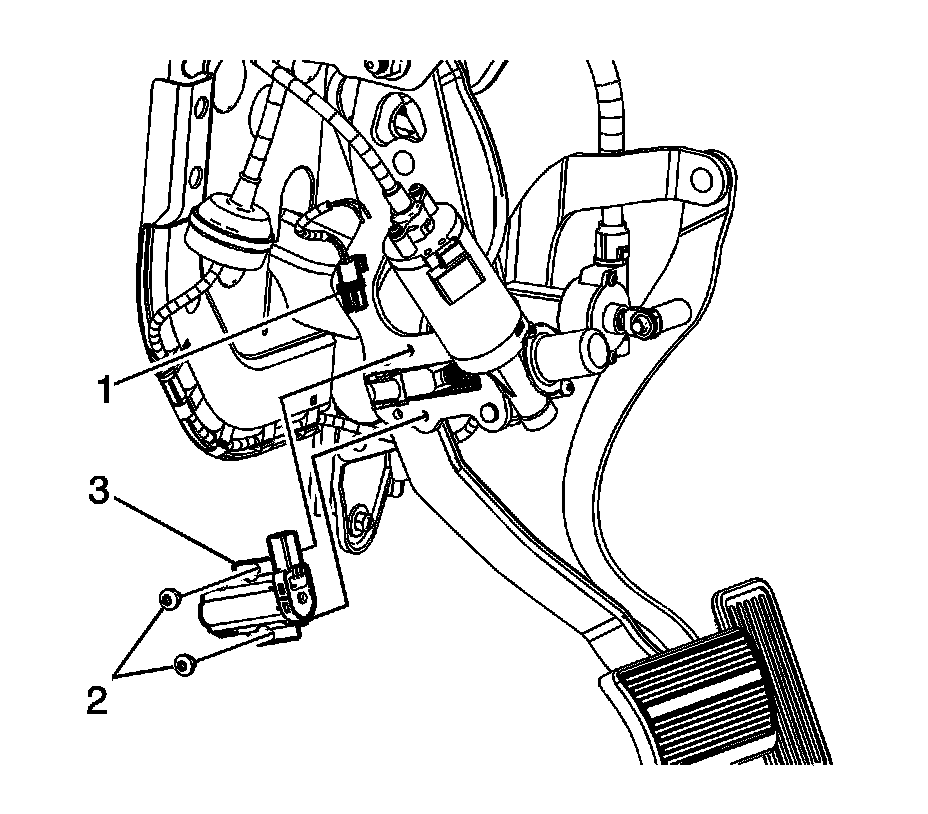

Braking Sensor/Switch: Service and Repair
BRAKE PEDAL POSITION SENSOR REPLACEMENT
REMOVAL PROCEDURE

1. Remove the driver knee bolster.
2. Remove the fuse block cover.
3. Disconnect the brake pedal position sensor electrical connector (1).
4. Remove the brake pedal position sensor bolts (2).
5. Remove the brake pedal position sensor (3) from the vehicle.
INSTALLATION PROCEDURE
1. Install the brake pedal position sensor (3) to the vehicle.
2. NOTE: Refer to Fastener Notice in Service Precautions.
Install the brake pedal position sensor bolts (2).
Tighten the bolts to 9 N.m (80 lb in).
3. Connect the brake pedal position sensor electrical connector (1).
4. Install the fuse block cover.
5. Install the driver knee bolster.